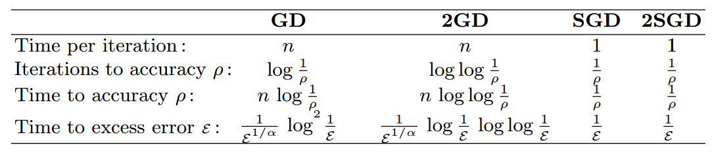
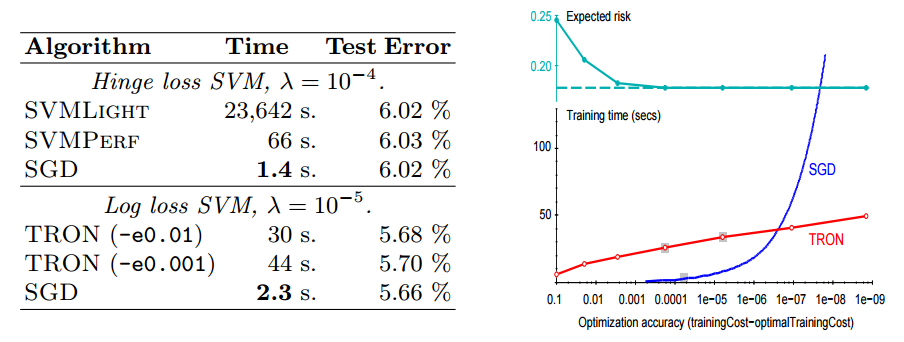
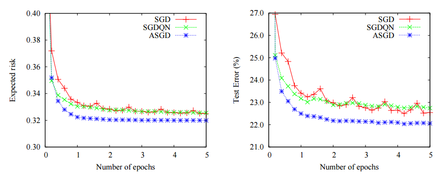
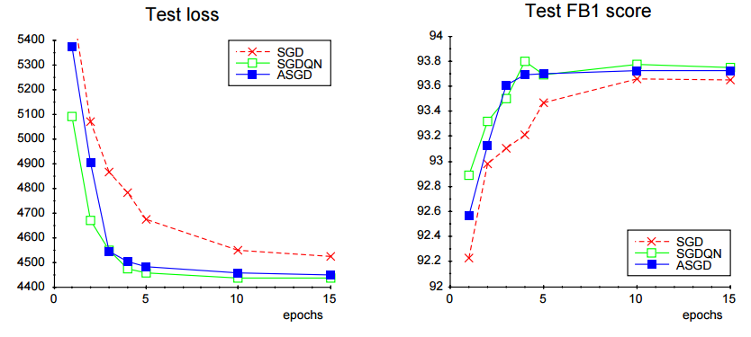

ارائه دهنده
احمد اسدی
استاد درس
دکتر امیرمزلقانی
معرفی نمادها
$ minimize \>\>\> Q(z, w) = l(f_w(z), y)\\ subject\>to \>\>\>f_w \in F $
$ w^{t+1} = w^t - \eta \frac{1}{N}\Sigma_{i=1}^N \nabla_w Q(z_i,w^t) $
$ w^{t+1} = w^t - \Gamma^t \frac{1}{N}\Sigma_{i=1}^N \nabla_w Q(z_i,w^t) $
رابطه جدید بروزرسانی وزنها$ w^{t+1} = w^t - \lambda^t \nabla_w Q(Z_i,w^t) $
شروط لازم و کافی برای همگرایی$\Sigma_t \lambda^t = \infty$$\Sigma_t (\lambda^t)^2 < \infty$
رابطه جدید بروزرسانی وزنها$ w^{t+1} = w^t - \lambda^t \Gamma^t \nabla_w Q(Z_i,w^t) $
تعریف تابع خطا - خطای تقریب$ \epsilon_{app} = E[E(f^∗_F) − E(f^∗)]$
تعریف تابع خطا - خطای تخمین$ \epsilon_{est} = E[ E(f_n) - E(f^∗_F)]$
تعریف تابع خطا - خطای بهینهسازی$ \epsilon_{opt} = E[E(\tilde{f_n}) − E(f_n)]$
مساله بهینهسازی نهایی$ minimze \>\>\> \epsilon = \epsilon_{app} + \epsilon_{est} + \epsilon_{opt} \\ subject\>to \>\>\> n \leq n_{max} \wedge T(F,\rho,n) \leq T_{max} $
رفتار مجانبی الگوریتمهای مختلف
مقایسه روش با دستهبندیکننده ماشین بردار پشتیبان
مقایسه نسخههای مختلف الگوریتم با یکدیگر
مقایسه نسخههای مختلف الگوریتم با یکدیگر